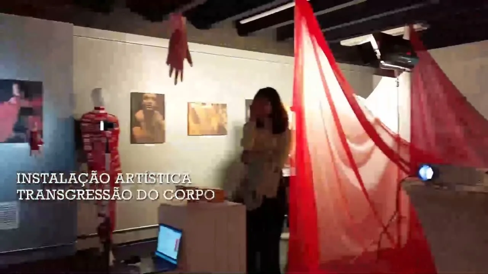

Instalação artística · 2023
Transgressão do Corpo

Ver no portfólio originalO projeto
A Consciência da Dor e do Prazer: instalação em foto, vídeo e som que reflete sobre modificações corporais e os limites entre dor, prazer e expressão.
Minha participação
Atuei como fotógrafa e na direção de atores, colaborando com a construção visual e performativa da instalação.
Junho de 2022 a junho de 2023